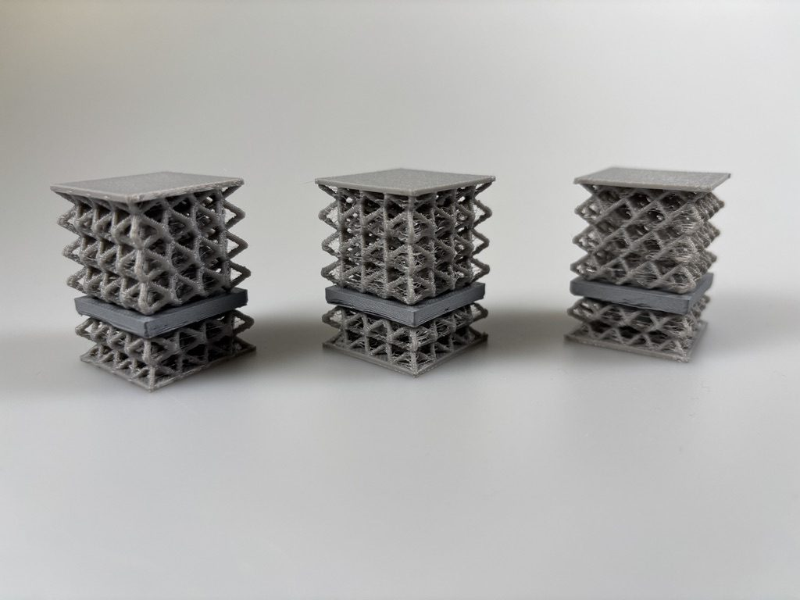

Rahul Bhaumik
Designer and HCI researcher exploring how form, surface and material shape the way we touch, press and interact with technology.
- Now
- Researcher, Media Interaction Lab, Free University of Bozen-Bolzano
- PhD
- Computer Science, unibz, 2026
- Visiting
- HCII, Carnegie Mellon University, 2025
- Trained
- B.Arch, SPA New Delhi · M.Des, IISc Bangalore
About
Rahul Bhaumik is a designer and researcher working across human-computer interaction, extended reality, soft interfaces and design pedagogy. He is a researcher and member of the Media Interaction Lab at the Free University of Bozen-Bolzano (unibz), Italy, where he completed his PhD in 2026 with the thesis Affordances of Soft Interfaces: A Design and Fabrication Approach. The thesis investigates soft, passive interfaces, from textiles to 3D-printed smart structures that sense pressure and deformation, for everyday and automotive interactions. In 2025 he spent six months as a Visiting Researcher at the Human-Computer Interaction Institute (HCII) at Carnegie Mellon University in Pittsburgh.
Trained as an architect and product designer, his work focuses on the tactile, material and experiential side of how people relate to technology, drawing on emerging fabrication technologies and morphological principles to create interfaces that are both functional and engaging to the senses. His work has appeared at ACM CHI and ACM AutomotiveUI, and in IEEE Sensors Letters and Communications Engineering.
Before his doctoral studies, he was an Assistant Professor at the Faculty of Architecture & Design, PES University, Bangalore (2018–2023), teaching and researching at the meeting point of digital design tools, learning systems and interaction design. He holds an M.Des in Product Design and Engineering from the Indian Institute of Science, Bangalore, and a B.Arch from the School of Planning and Architecture, New Delhi.
Work
Arranged by the three parts of the doctoral research.
Form
How does the shape of an interface invite a gesture?

Textile Interfaces for Automotive Interiors
A soft, three-dimensional central console: which gestures people make on it, and how its surface can guide them.
People reach for different gestures on a 3D surface
Clear agreement for pan, scroll and select; more varied gestures for seat adjustment and radial scrolling. A console should match gestures to tasks and recognise several of them.
Surface
Can a pattern tell your finger what to do before it touches?


Material
Can softness itself be the sensor?

3D-Printed Soft Sensitive Structures
TPU lattices that give under pressure and spring back, with a ferromagnetic core read by a coil below.
Smart Shoe Sole with Real-Time Variable Stiffness
A sole whose stiffness changes in real time, continuing the work on soft printed structures and wearables.
- 2026InSense3D: Designing Smart 3D-Printed Structures Leveraging Ferromagnetic Filaments for Inductive Deformation SensingACM CHI
- 2026Soft, Scalable Spacer-Knitted Piezoresistive Pressure Sensors with Tunable Localized Sensitivity Enabled by Heat-Expandable Yarn InlaysIEEE Sensors Letters
- 2025Inductive Pressure Sensors Using 3D-Printed Structures with Tunable StiffnessIEEE Sensors Letters
Map
Every research theme, and the papers between them.
Open a theme to see its papers. The centre opens a 3D view.
Thesis
Free University of Bozen-Bolzano, 2026.
Affordances of Soft Interfaces: A Design and Fabrication Approach
How the affordances of soft, passive interfaces emerge from their geometry, surface and material, from a touch-sensitive car console and embroidered textiles to 3D-printed structures that detect touch and pressure.
- Degree
- PhD in Computer Science
- Supervisors
- Prof. Michael Haller
Prof. Antonella De Angeli - Awarded
- 12 June 2026
Publications
Selected, newest first.
20262 papers
20252 papers
20242 papers
20233 papers
- Smart Vernacular Architecture: A Framework for Assessment and Virtual Reality-based Visualisation of Indigenous Toda DwellingsProcedia Computer Science
- An Intelligent ABM-based Framework for Developing Pandemic-Resilient Urban Spaces in Post-COVID Smart CitiesProcedia Computer Science
- An Intelligent Virtual Environment for Designers with Reduced Motor AbilitiesProcedia Computer Science
20211 paper
20201 paper
20192 papers
Background
Architecture, then product design, then interaction.
Work
Education
Contact
For collaborations, talks or questions about the work, write to rahul.bhaumik@unibz.it